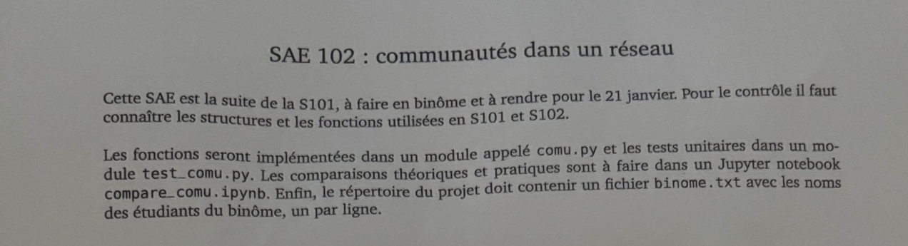

SAÉ 1.02 · BUT1 · S1
Implémentation d'un besoin simple
Développement d'un mini réseau social basé sur des graphes en Python

Informations clés
Période
Octobre — Décembre 2024 · BUT1 S1
Équipe
Travail individuel
Compétences BUT
Réaliser un dvpt
Technologies
Python · Structures de données · POO
Le projet en bref
Suite logique de la SAÉ 1.01 : après avoir analysé un graphe, il fallait maintenant implémenter les structures qui permettent de représenter un mini réseau social (utilisateurs, amitiés, recommandations) avec ses opérations de base.
L'enjeu était de bien choisir ses structures de données (listes, dictionnaires, ensembles) selon les opérations à faire, et d'écrire du code Python propre, modulaire et testé.
Comment ça s'est déroulé
Analyse du besoin
Lister les fonctionnalités attendues : ajouter un utilisateur, créer une amitié, suggérer des amis, etc.
Choix des structures de données
Décision : un dictionnaire pour les utilisateurs, des sets pour les amitiés (rapidité).
Implémentation et tests
Écriture des fonctions une par une avec petits tests à chaque étape.
Mon avis personnel
Cette SAÉ m'a appris une vraie leçon : le choix des structures de données change tout.
J'avais commencé avec des listes partout, et certaines opérations étaient horriblement lentes. En passant
aux ensembles (sets), tout s'est accéléré. C'est ma première vraie prise de conscience qu'« optimiser » n'est
pas juste un mot abstrait dans un cours.